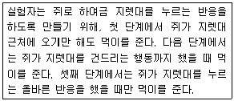
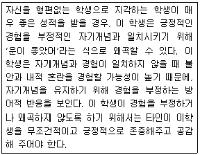
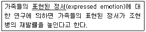
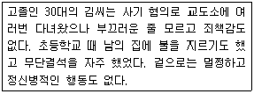
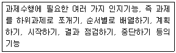
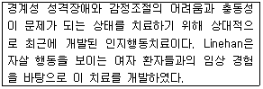
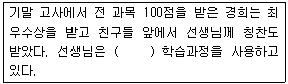
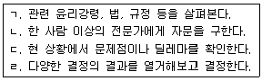

임상심리사-2급 (2016-03-06 기출문제)
1과목: 심리학개론
1. ‘대학생들은 축구와 야구 중에 어느 것을 더 좋아하는가’ 라는 문제를 검증하는 경우처럼 빈도나 비율의 차이검증에 가장 적합한 분석방법은?
- t 검증
- F 검증
- Z 검증
- x2 검증
(정답률: 77%)

2. 어떤 행동을 형성하고 유지시키기 위한 강화계획에 관한 설명과 가장 거리가 먼 것은?
- 고정비율 계획에서는 매 n번의 반응마다 강화인이 주어진다.
- 변동비율 계획에서는 평균적으로 n번의 반응마다 강화인이 주어진다.
- 고정간격 계획에서는 정해진 시간이 지난 후의 첫 번째 반응에 강화인이 주어지고, 강화인이 주어진 시점에서 다시 일정한 시간이 지난 후의 첫 번째 반응에 강화인이 주어진다.
- 변동비율과 변동간격 계획에서는 강화를 받은 후 일시적으로 반응이 중단되는 특성이 있다.
(정답률: 73%)
3. 주어진 자극과 장기기억 속에 저장되어 있는 과거의 경험 및 지식을 근거로 하여 주어진 자극이 무엇인지를 파악하는 과정은?
- 선택적 주의
- 형태재인
- 부호화
- 추론
(정답률: 62%)
4. Erikson의 심리사회적 단계에서 초기 성인기에 겪는 위기는?
- 신뢰감 대 불신감
- 정체감 대 혼미감
- 친밀감 대 고립감
- 생산성 대 침체감
(정답률: 82%)
5. Freud의 심리성적발달단계에서 초자아가 형성되는 시기는?
- 구강기
- 항문기
- 남근기
- 잠복기
(정답률: 85%)
6. 다음의 강화계획 중 학습된 행동이 쉽게 소거되지 않는 것은?
- 고정간격강화
- 변동간격강화
- 고정비율강화
- 변동비율강화
(정답률: 93%)
7. A타입 성격의 특성이 아닌 것은?
- 강한 경쟁심
- 약속 불이행
- 강한 적대감
- 쉽게 긴장
(정답률: 72%)
8. 고전적 조건형성에서 조건자극과 무조건자극을 배열할 때 조건형성효과가 가장 오래 지속되는 배열은?
- 후진 배열
- 흔적 배열
- 지연 배열
- 동시적 배열
(정답률: 60%)
9. 아동기의 애착에 관한 설명으로 옳은 것은?
- 유아가 엄마에게 분명한 애착을 보이는 시기는 생후 3~4개월경부터이다.
- 엄마와의 밀접한 신체접촉이 애착을 형성하는데 가장 중요한 역할을 한다.
- 애착은 인간 고유의 현상으로서 동물들에게는 유사한 현상을 찾아보기 어렵다.
- 안정적으로 애착된 아동들은 엄마가 없는 낯선 상황에서도 주의를 적극적으로 탐색한다.
(정답률: 86%)
10. Alder의 개인심리학에서 무의식이나 성적 욕구보다 중요하게 다룬 개념은?
- 열등감의 극복
- 자존감
- 자아
- 성장
(정답률: 86%)
11. 살인 사건이나 화재 등으로 죽는 사람과 심장 마비로 죽는 사람 중 누가 더 많은 지를 묻는 질문에서 사람들이 흔히 범하는 확률추론과정의 오류는?
- 가용성 발견법
- 대표성 발견법
- 확증 편향
- 연역적 추리
(정답률: 76%)
12. 심리학에서 실험에 관한 일반적인 설명과 가장 거리가 먼 것은?
- 실험참가자의 반응을 종속변인이라고 한다.
- 흔히 실험자의 조작이 가해지지 않은 집단을 통제집단이라고 한다.
- 일반적으로 독립변인은 원인으로, 종속변인은 그 결과로 생각할 수 있다.
- 독립변인은 주로 실험자의 실험의도와는 상관없이 실험참가자가 실험에 임하기 전의 자연적 상태를 측정하는 변인이다.
(정답률: 67%)
13. 영아들을 대상으로 한 시각절벽(visual cliff) 실험을 통해 알 수 있는 것은?
- 신생아들은 새로운 자극을 제시하면 맥박이 평상시보다 빨라진다.
- 생후 6개월 이하의 영아들은 깊이지각 능력을 가지고 있다.
- 신생아들은 정지해있는 물건보다 움직이는 물건을 더 선호한다.
- 신생아들은 일반적인 도형보다 사람얼굴을 더 선호한다.
(정답률: 87%)
14. 다음 학습방법이 해당하는 것은?

- 조형
- 자극일반화
- 혐오적 조건형성
- 체계적 둔감화
(정답률: 89%)
15. 상관계수에 관한 설명으로 틀린 것은?
- 두 변수 사이의 관계를 기술하기 위한 것으로 두 변수가 연합되는 정도의 통계측정치이다.
- 상관계수의 범위는 +1.0에서 –1.0까지이다.
- 두 변수 사이의 관계의 강도는 상관계수(r)의 절대치에 의해 규정된다.
- 한 변수가 다른 변수에 영향을 미치는 인과관계를 추론할 수 있다.
(정답률: 67%)
16. 기억정보가 아날로그 방식으로 표상됨을 나타내는 예는?
- 심적 회전
- 마디(node)와 연결로(link)
- 디지털 컴퓨터
- 명제
(정답률: 63%)
17. Atkinson과 Shiffrin의 기억모형에 관한 설명으로 틀린 것은?
- 계열위치효과는 이 모형으로 잘 설명된다.
- 단기기억에는 시연, 부호화, 결정, 인출전략의 4가지 통제과정이 있다.
- Miller가 주장한 단기기억 용량 7±2 청크도 이 모형과 잘 부합된다.
- 감각기관들은 직렬적으로 기능하기 때문에 정보처리에 유리하다.
(정답률: 67%)
18. 어떤 사람의 행동을 보고 상황이나 외적 요인보다는 사람의 기질이나 내적 요인에 그 원인을 두려고 하는 것은?
- 고정관념
- 현실적 왜곡
- 후광효과
- 기본적 귀인오류
(정답률: 83%)
19. 다음과 같은 입장을 취하고 있는 성격이론은?

- 특질이론
- 정신역동이론
- 현상학적 이론
- 사회인지이론
(정답률: 73%)
20. Freud의 정신 역동적 접근에 관한 설명으로 틀린 것은?
- 원초아는 현실의 원리를 따른다.
- 사람들은 불안을 극복하기 위해 억압과 같은 방어기제를 사용한다.
- 아동이 강박적으로 청결이나 정돈에 매달리는 것은 항문기적 성격의 갈등 때문이다.
- 외디프스 콤플렉스는 남근기에 나타나는 현상이다.
(정답률: 93%)
2과목: 이상심리학
21. 다음 밑줄친 ‘표현된 정서’의 의미로 옳은 것은?

- 지나치게 정서적 지지와 격려를 제공하는 것
- 비판적으로 과도한 간섭을 하는 것
- 냉정하고, 조용하며, 무관심한 것
- 관여하지 않으며, 적절한 한계를 정해주지 못하는 것
(정답률: 81%)
22. DSM-5의 진단범주 중 영아기, 아동기 및 청소년기에 흔히 처음으로 진단되는 장애에 포함되지 않는 것은?
- 지적발달장애
- 품행장애
- 틱장애
- 적응장애
(정답률: 68%)
23. 조현병의 다른 증상들은 없으면서 비현실적인 믿음을 유지하는 장애는?
- schizoaffective disorder
- schizophreniform disorder
- delusional disorder
- schizotypal personality disorder
(정답률: 64%)
24. 아동기에 나타날 수 있는 불안장애가 아닌 것은?
- 선택적 무언증
- 사회불안장애
- 특정공포증
- 자폐증
(정답률: 66%)
25. 외상적 사건에 대한 기억과 연관된 불안을 감소시키는데 초점을 맞추고 있으며, Foa에 의해 개발된 이후 외상후 스트레스 장애에 대해 경험적으로 지지된 치료로서 학계로부터 널리 인정을 받고 있는 치료법은?
- 불안조절훈련
- 안구운동 둔감화와 재처리 치료
- 지속노출치료
- 인지적 처리치료
(정답률: 59%)
26. 자살에 관한 설명과 가장 거리가 먼 것은?
- 모든 자살은 우울한 사람에게 국한되어 나타난다.
- 자살 기도자는 여성이 많으나 자살 성공자는 남성이 많다.
- 자살률은 경제적 불황기에는 올라가며, 경제적 번영기에는 안정되어 있으며, 전쟁 중에는 감소 한다.
- 미국에서 아동 및 청소년기의 자살률은 증가하는 추세이다.
(정답률: 86%)
27. 신경성 식욕부진증에 관한 설명으로 틀린 것은?
- 폭식하거나 하제를 사용하는 경우는 해당하지 않는다.
- 체중과 체형이 자기평가에 지나치게 영향을 미친다.
- 말랐는데도 체중의 증가와 비만에 대한 극심한 두려움이 있다.
- 나이와 신장을 고려한 정상체중의 85% 이하로 체중을 유지한다.
(정답률: 76%)
28. 염색체 이상과 관련이 있는 장애로 신체적으로 특징적인 외모를 가진 장애는?
- 다운증후군
- 아스퍼거 증후군
- 운동조정장애
- 주의력결핍-과잉행동장애
(정답률: 91%)
29. 알코올 중독과 관련 있는 장애는?
- 헌팅톤 무도병
- 코르사코프 증후군
- 레트 장애
- 캐너 증후군
(정답률: 88%)
30. DSM-5에서 성도착 장애의 유형에 대한 설명으로 옳은 것은?
- 노출장애 – 다른 사람이 옷을 벗고 있는 모습을 몰래 훔쳐봄으로써 성적 흥분을 느끼는 경우
- 관음장애 – 동의하지 않는 사람에게 자신의 성기나 신체 일부를 반복적으로 나타내는 경우
- 아동성애장애 – 사춘기 이전의 소아를 대상으로 하여 성적 공상이나 성행위를 반복적으로 나타내는 경우
- 성적 가학장애 – 굴욕을 당하거나 매질을 당하거나 묶이는 등 고통을 당하는 행위를 중심으로 성적 흥분을 느끼거나 성적행위를 반복
(정답률: 86%)
31. 성격장애는 크게 세 집단으로 구분한다. 그 중 B군 성격장애 집단은 극적이고 감정적이며, 변덕스러운 특징을 보이는 성격장애 집단이다. 여기에 속하는 성격장애는?
- 편집성 성격장애
- 경계성 성격장애
- 회피성 성격장애
- 의존성 성격장애
(정답률: 85%)
32. 다음 사례에서 김씨의 이러한 성격과 관련된 요인으로 확인할 사항이 아닌 것은?

- 소아기에 신경학적 증후없이 중추신경계에 기능장애만 발생하였는지 여부
- 테스토스테론 호르몬의 수치가 정상 수준인지 여부
- 부모의 성격이 파괴적이거나 변덕스럽고 충동적이어서 노골적인 증오심과 거부에 시달려 일관성 있는 초자아 발달에 지장이 있었는지 여부
- 부모의 질병, 별거, 이혼 또는 거부감정이 있어서 기본적으로 요구되는 사랑, 안전, 안정 및 존경심에 문제가 있는지 여부
(정답률: 60%)
33. DSM-5에서 ‘신체증상 및 관련 장애’ 분류항목에 해당하는 것은?
- 전환장애(conversion disorder)
- 다중인격(multiple personality)
- 심인성 건망증(psychogenic amnesia)
- 신체변형장애(body dysmorphic disorder)
(정답률: 70%)
34. 다음과 같은 과제수행에 필요한 여러 가지 인지기능을 수행하지 못하는 치매증상은?

- 실어증
- 실인증
- 지남력장애
- 실행기능장애
(정답률: 85%)
35. 공포증에 대한 2요인 이론은 어떤 요인들이 결합된 이론인가?
- 학습 요인과 정신분석 요인
- 학습 요인과 인지 요인
- 회피 조건형성과 준비성 요인
- 고전적 조건형성과 조작적 조건형성
(정답률: 75%)
36. Abramson 등의 ‘우울증의 귀인이론 (attributional theory of depression)’에 관한 설명으로 틀린 것은?
- 우울증에 취약한 사람은 실패경험에 대해 내부적, 안정적, 전반적 귀인을 하는 경향이 있다.
- 실패경험에 대한 내부적 귀인은 자존감을 손상시킨다.
- 실패경험에 대한 안정적 귀인은 우울의 만성화에 기여한다.
- 실패경험에 대한 특수적 귀인은 우울의 일반화를 조장한다.
(정답률: 79%)
37. Schneider가 주장한 조현병(정신분열병)의 일급증상이 아닌 것은?
- 사고 누락
- 사고 반향
- 사고 투입
- 사고 전파
(정답률: 53%)
38. DSM-5에 따라 성격장애를 군집별로 분류할 때 옳은 것은?
- 이상하며 기괴한 증상을 보이는 성격장애 군집으로는 조현형, 조현성, 편집성 성격장애가 있다.
- 극적이고 감정적이며 변덕스러운 것이 특징인 장애로 히스테리성, 자기애성, 반사회성, 회피성 성격장애가 있다.
- 가학적, 자기패배적, 수동공격적 성격장애는 DSM-5에서 중요하게 다루어지는 성격장애의 군집이다.
- 불안하고 두려움, 근심스러운 것이 특성인 성격장애로 편집성, 의존성, 경계성 성격장애가 있다.
(정답률: 67%)
39. 조현형 성격장애 진단기준에 포함되지 않는 것은?
- 괴이한 사고와 언어
- 과도한 사회적 불안
- 관계망상적 사고
- 불안정하고 강렬한 대인관계
(정답률: 57%)
40. Bleuler가 제시한 조현병(정신분열병)의 네 가지 근본증상, 즉 4A에 해당하지 않는 것은?
- 감정의 둔마(affective blunting)
- 자폐증(autism)
- 양가감정(ambivalence)
- 무논리증(alogia)
(정답률: 40%)
3과목: 심리검사
41. K-WAIS-IV에서 개념형성능력을 측정하는 소검사는?
- 차례맞추기
- 공통성문제
- 이해문제
- 빠진곳 찾기
(정답률: 59%)
42. K-WISC-IV의 시행 연령 범위는?
- 3~7세
- 6~16세
- 5~10세
- 12~20세
(정답률: 80%)
43. 치매가 의심되는 노인 환자를 대상으로 실시할 검사와 관련이 없는 것은?
- MMPI-2
- 간이정신상태검사(MMSE)
- 기억력검사
- 이름대기검사(BNT)
(정답률: 86%)
44. 신경심리검사와 가장 거리가 먼 것은?
- H-R(Halstead-Reitan Battery)
- L-N(Luria-Nebraska Battery)
- BGT(Bender Gestalt Test)
- Rorschach Ink Blot test
(정답률: 74%)
45. 지능검사 결과를 해석할 때 주의해야 할 사항과 가장 거리가 먼 것은?
- IQ 점수를 표시된 숫자 그 자체로 생각할 것
- 과잉해석을 피할 것
- 합리적이되 융통성을 가질 것
- 학교성적을 예측할 수 있는 여러 변인 중의 하나로 생각할 것
(정답률: 80%)
46. 성취도 검사와 적성검사의 특성에 관한 설명으로 옳은 것은?
- 성취도 검사와 적성검사의 차이는 문항형식에 있다.
- 성취도는 과거 중심적이고 적성은 미래 중심적이라고 할 수 있다.
- 성취는 유전의 영향을, 적성은 환경의 영향을 많이 받는 것으로 본다.
- 대부분의 학자들은 적성을 특수능력보다는 일반적 능력으로 본다.
(정답률: 68%)
47. 아동이 현재 보이고 있는 시각-운동 발달 수준이 아동의 실제 연령에 부합되는 것인지 알고 싶다면 BGT 검사 시 어떤 방법론적 고려를 하는 것이 가장 적합한가?
- Koppitz Developmental Bender Scoring System
- Group Test
- Tachistoscopic Procedure
- Raven’s Progressive Matrices
(정답률: 70%)
48. MMPI-2와 비교할 때 성격평가질문지(PAI)의 특징이 아닌 것은?
- 문항의 수가 더 적다.
- 임상척도의 수가 더 적다.
- 임상척도 이외에 대인관계척도를 포함한다.
- 4지 선다형이다.
(정답률: 62%)
49. MMPI-2 검사를 실시할 때 유의사항으로 틀린 것은?
- 독해력이 초등학교 6학년수준 미만인 사람에게는 실시하기 어렵다.
- 시행 소요시간이 90분 내외로 적정한지 검토해야 한다.
- MMPI-2는 반드시 개별적으로 실시해야 한다.
- 피검사자에게 “현재의 상태”를 기준으로 평가하라고 지시한다.
(정답률: 85%)
50. 심리평가 면담에 관한 설명으로 틀린 것은?
- 수검자뿐 아니라 필요하다면 보호자와 같은 주변 사람으로부터 정보를 얻을 수 있다.
- 라포를 유지한 상태에서 수검자의 자발성을 최대한 이끌어내는 것이 필요하다.
- 수검자의 진술에서 객관적 현실에 부합되지 않는 경우는 직면이 필요하다.
- 폐쇄형 질문보다는 개방형 질문을 우선적으로 사용한다.
(정답률: 77%)
51. MMPI-2에서 5번 척도가 높은 여대생의 경우에 가능한 해석으로 가장 적합한 것은?
- 성격적으로 수동-공격적인 특성이 있다.
- 반드시 남성적인 흥미를 나타내는 것은 아니다.
- 자신감이 부족하고 충동적이다.
- 심미적이고 예술적인 취미를 가지며 지능이 우수하다.
(정답률: 85%)
52. 투사적 성격검사와 비교할 때, 객관적 성격검사의 장점은?
- 객관성의 증대
- 반응의 다양성
- 방어의 곤란
- 무의식적 내용의 반응
(정답률: 82%)
53. 심리평가 면담의 지침으로 옳은 것은?
- 면담 초기 정보획득을 위해 구체적인 사안을 다루는 폐쇄형 질문으로 시작한다.
- 수검자에게 검사에 대한 설명을 하고 평가에 대한 동의를 얻는다.
- 심리검사를 받는 이유와 증상에 대한 질문은 면담의 뒷 부분에 한다.
- 다른 정보 출처 보다는 내담자 본인에게 얻은 정보를 최우선으로 한다.
(정답률: 81%)
54. 동일한 검사를 동일한 집단에 1주일 또는 1개월의 간격을 두고 다시 실시하여 전후 검사 결과를 상관계수로 계산하는 신뢰도는?
- 동형검사 신뢰도
- 검사-재검사 신뢰도
- 반분 신뢰도
- 문항내적 합치도
(정답률: 83%)
55. Rosenzweig의 그림좌절검사(Picture Frustration Test)에서는 표출되는 공격성의 세 방향을 구분하고 있다. 세 방향에 속하지 않는 것은?
- 투사지향형
- 내부지향형
- 외부지향형
- 회피지향형
(정답률: 61%)
56. MMPI-2에서 4-6척도가 상승한 사람의 특징일 가능성이 가장 적은 것은?
- 항상 긴장되어 있고 다양한 신체적 증상을 나타낼 가능성이 높다.
- 분노와 적개심이 억제되어 있을 가능성이 높다.
- 타인에 대한 불신감이 많을 가능성이 높다.
- 권위적 대상(authority figure)과의 관계에서 문제가 발생할 가능성이 높다.
(정답률: 72%)
57. BGT에 의해 아동의 정서적 문제를 알아보고자할 때, 고려해야 할 지표와 가장 거리가 먼 것은?
- 도형의 각도 변화
- 도형 크기의 변화 여부
- 도형 배치의 순서
- 선긋기의 강도
(정답률: 55%)
58. Cattell의 지능이론에 관한 설명으로 틀린 것은?
- Cattell은 지능을 유동적 지능과 결정적 지능으로 구별하였다.
- 유동적 지능은 22세 이후 까지도 지속적으로 발달한다.
- 결정적 지능은 문화적, 교육적 경험에 따라 영향을 받는다.
- 유동적 지능은 개인의 독특한 신체구조와 과정에 기초한 선천적 기능이다.
(정답률: 80%)
59. 교통사고 환자의 신경심리 검사에서 꾀병을 의심할 수 있는 경우는?
- 기억과제에서 쉬운 과제에 비해 어려운 과제에서 더 나은 수행을 보일 때
- 즉각 기억과제와 지연기억과제의 수행에서 모두 저하를 보일 때
- 뚜렷한 병변이 드러나며 작의적인 반응을 보일 때
- 단기기억 점수는 정상범위이나 다른 기억점수가 저하를 보일 때
(정답률: 66%)
60. 아동의 발달적 수준을 측정하기 위해 사용하기 어려운 검사는?
- 사회성숙도 검사(SMS)
- 인물화 검사(DAP)
- 아동용 주제통각검사(CAT)
- 벤더도형검사(BGT)
(정답률: 43%)
4과목: 임상심리학
61. 전통적인 정신역동적 심리평가와 비교한 행동평가의 특징으로 옳은 것은?
- 행동의 무의식적인 동기를 파악할 수 있다.
- 문제행동의 주요 원인을 내적인 심리과정에서 찾는다.
- 가설적-연역법을 적용하여 환경요인을 규명한다.
- 특정 정신장애의 진단을 목표로 하는 경우가 많다.
(정답률: 57%)
62. 대뇌피질 각 영역의 기능에 관한 설명으로 옳은 것은?
- 측두엽 : 망막에서 들어오는 시각정보를 받아 분석하며 이 영역이 손상되면 안구가 정상적인 기능을 하더라도 시력을 상실하게 된다.
- 후두엽 : 언어를 인식하는 데 중추적인 역할을 하며 정서적 경험이나 기억에 중요한 역할을 담당한다.
- 전두엽 : 현재의 상황을 판단하고 상황에 적절하게 행동을 계획하며 부적절한 행동을 억제하는 등 전반적으로 행동을 관리하는 역할을 한다.
- 두정엽 : 대뇌피질의 다른 영역으로부터 모든 감각과 운동에 관한 정보를 다 받으며 이러한 정보들을 종합한다.
(정답률: 78%)
63. 다음 중 규준(norm)에 관한 설명으로 가장 적합한 것은?
- 측정한 점수의 일관성 정도를 제공해준다.
- 검사 실시와 과정이 규정된 절차에서 이탈된 정도를 제공해준다.
- 특정집단의 전형적인 또는 평균적인 수행 지표를 제공해준다.
- 연구자가 측정한 의도에 따라 측정이 되었는지의 정도를 제공해준다.
(정답률: 65%)
64. 사회기술 훈련 프로그램의 구성요소에 해당되지 않는 것은?
- 문제해결 기술
- 의사소통 기술
- 증상관리 교육
- 자기주장 훈련
(정답률: 76%)
65. 임상적 면접에서 사용되는 바람직한 의사소통 기술에 해당되는 것은?
- 면접자 자신의 사적인 이야기를 꺼내는데 주저하지 않는다.
- 침묵이 길어지지 않게 하기 위해, 면접자는 즉각 개입할 준비를 한다.
- 폐쇄형보다는 개방형 질문을 주로 사용한다.
- 내담자의 감정보다는 얻고자 하는 정보에 주목한다.
(정답률: 77%)
66. 브로카(Broca) 영역 및 그 안쪽에 있는 백질과 주변 영역이 손상되었을 때 나타나는 증상은?
- 언어적 표현의 장애 혹은 표현적 실어증
- 언어적 이해의 장애 혹은 수용적 실어증
- 목표지향적 운동을 수행하지 못하는 실행증
- 소리가 인식되거나 해석되지 못하는 실인증
(정답률: 71%)
67. 학생 상담 시 어떤 학생이 또래들에게 가장 선호되고, 혹은 그렇지 못하는가를 확인해 보기 위해 사회관계 측정법(sociogram)을 사용하려고 한다. 상담자가 사회관계 측정법을 사용 시 유의사항으로 틀린 것은?
- 유의미한 결과를 얻어내려면 학생들간에 교류하는 시간이 충분해야 한다.
- 학생의 연령대가 어릴수록 반응이 솔직하고 신뢰도와 타당도가 높다.
- 집단의 크기가 유용한 정보를 제공해 줄 수 있으므로 집단의 크기가 너무 크거나 너무 작아도 안된다.
- 유의미한 집단활동이 있어야 학생들간의 교류가 일어나므로, 상담자는 학생들에게 의미있고 친숙한 활동을 선택해서 제공해야 한다.
(정답률: 73%)
68. 비밀보장에 관한 설명으로 틀린 것은?
- 내담자에게 얻은 정보에 대한 비밀보장을 중요시해야 한다.
- 내담자 자신이나 타인에게 명백한 위험을 초래하게 되는 경우에도 비밀보장은 준수되어야 한다.
- 적절한 시기에 내담자들에게 비밀보장의 법적인 한계에 대하여 알려주어야 한다.
- 전문적인 관계에서 얻은 정보나 평가자료는 전문적인 목적을 위해서만 토론되어야 한다.
(정답률: 82%)
69. 건강심리학 분야의 주된 관심 영역과 가장 거리가 먼 것은?
- 흡연
- 우울증
- 비만
- 알코올 남용
(정답률: 81%)
70. 다음은 어떤 치료에 관한 설명인가?

- 현실치료
- 변증법적 행동치료
- 의미치료
- 게슈탈트치료
(정답률: 61%)
71. 정신질환자의 사회복귀정책에 관한 설명으로 적합하지 않는 것은?
- 유럽과 미국에서 시작되었으며, 전세계적으로 확산되는 추세이다.
- 기관에 수용하는 정책보다 국가예산이 더 많이 소요된다.
- 인본주의적 정신에 기초하여, 환자의 삶의 질을 높이는데 주력한다.
- 의학적 모형에 토대한 병원 중심의 재활이 아니고, 사회심리학적 모형에 토대한 지역사회 중심의 재활이 더 중요하다.
(정답률: 70%)
72. 다음 중 관계를 중심으로 치료가 초점화되고 있는 정신역동적 접근방법의 단기치료가 아닌 것은?
- 핵심적 갈등관계 주제(core conflictual relationship theme)
- 불안유발 단기치료(anxiety provoking brief therapy)
- 기능적 분석(functional analysis)
- 분리개별화(separation and individuation)
(정답률: 58%)
73. 다음 ( )에 가장 알맞은 용어는?

- 조건화
- 내적 동기화
- 성취
- 모델링
(정답률: 49%)
74. 체계적 둔감법에 관한 설명으로 틀린 것은?
- 기본 절차는 조작적 조건형성의 원리에 기초한 치료기법이다.
- 주로 불안과 관련된 부적응 행동의 치료에 사용된다.
- 불안을 일으키는 자극들을 반복적으로 이완상태와 짝 지운다.
- 신경성 식욕부진증, 충동적 행동, 우울증을 치료하는데도 사용된다.
(정답률: 57%)
75. K-WAIS-IV의 하위검사 중 주어진 시각적 자극의 전체를 고려하여 답을 끌어내는 능력을 측정하며, 시각적 추론의 적절성을 평가하는 검사는?
- 기호쓰기
- 동형찾기
- 토막짜기
- 행렬추리
(정답률: 40%)
76. 미국 사회에서 1950년대 많은 정신과 환자들이 병원장면을 떠나 지역사회 정신건강 기관이나 사회에 복귀하게 한 직접적인 원인은?
- 향정신성 약물치료
- 행동주의 접근 치료
- 인본주의 접근 치료
- 정신분석적 접근 치료
(정답률: 48%)
77. 행동치료를 위해 현재문제에 대한 기능분석을 하면 규명할 수 있는 요소가 아닌 것은?
- 문제행동을 일으키는 자극이나 선행조건
- 문제행동과 관련있는 유기체 변인
- 문제행동과 관련된 인지적 해석
- 문제행동의 결과
(정답률: 51%)
78. 다음 중 Rogers는 어떤 치료 기법을 발전시켰는가?
- 내담자 중심
- 합리-정서치료
- 인지 행동치료
- 대상관계치료
(정답률: 83%)
79. 정신건강의학과 병동에 입원한 환자들 중 단체생활의 규칙을 잘 지키지 않는 환자들의 행동문제들을 개선하는데 가장 효과적인 치료적 접근은?
- 정신분석
- 체계적 둔감법
- 토큰 경제
- 현실치료
(정답률: 78%)
80. 구조적 가족치료를 창안한 사람은?
- Adler
- Sullivan
- Minuchin
- Hartman
(정답률: 68%)
5과목: 심리상담
81. 청소년의 게임중독 치료와 관련하여 가장 적합하지 않은 개입은?
- PC방에 다녀온 것을 기록하게 한다.
- 상담의 목표를 부모님과 의논한 후 상담자가 정해준다.
- 상담과정에 어머니를 조력자로 적극적으로 개입시킨다.
- 자기관리 훈련을 시킨다.
(정답률: 77%)
82. Taylor가 제시한 학습부진아에 관한 특성과 가장 거리가 먼 것은?
- 학업에 대한 막연한 불안감을 가지고 있다.
- 자기비판적이고 부적절감을 가져 자존감이 낮다.
- 목표설정이 비현실적이고 계속적인 실패를 보인다.
- 주의가 산만하고 과업지향적이다.
(정답률: 71%)
83. Axline의 비지시적 놀이치료에서 놀이치료자가 갖추어야할 원칙에 포함되지 않는 것은?
- 아동을 있는 그대로 수용한다.
- 아동과 따뜻하고 친근한 관계를 가능한 빨리 형성하도록 한다.
- 가능한 비언어적인 방법으로만 아동의 행동을 지시한다.
- 아동이 타인과의 관계형성이 본인의 책임이라는 것을 알도록 하기 위해서는 제한을 둘 수 있다.
(정답률: 70%)
84. 정신분석적 상담기법 중 상담진행을 방해하고 현재 상태를 유지하려는 의식적, 무의식적 생각, 태도, 감정, 행동을 의미하는 것은?
- 전이
- 저항
- 해석
- 훈습
(정답률: 84%)
85. 게슈탈트 심리치료에서 알아차림-접촉주기 단계의 진행순서로 옳은 것은?
- 배경 → 알아차림 → 감각 → 에너지 동원 → 행동 → 접촉 → 배경
- 배경 → 에너지 동원 → 감각 → 알아차림 → 접촉 → 행동 → 배경
- 배경 → 감각 → 알아차림 → 에너지 동원 → 행동 → 접촉 → 배경
- 배경 → 감각 → 알아차림 → 행동 → 에너지 동원 → 접촉 → 배경
(정답률: 75%)
86. 다음 중 상담목표의 구성요소에 관한 설명으로 틀린 것은?
- 과정목표는 내담자의 변화에 필요한 상담분위기의 조성과 관련된다.
- 과정목표에 대한 결과는 내담자의 책임이다.
- 결과목표는 내담자가 상담을 통해 이루고자 하는 구체적인 삶의 변화와 관련된다.
- 결과목표는 일반적으로 객관적일수록 효과적이다.
(정답률: 73%)
87. 약물에 관한 설명으로 틀린 것은?
- 약물 내성은 동기의 대립과정이론으로 설명할 수 있다.
- 바비튜레이트는 자극제이다.
- 메스칼린은 환각제다.
- 진정제는 GABA 시냅스에 영향을 준다.
(정답률: 44%)
88. 정신분석 상담에서 전이분석이 중요한 이유로 가장 적합한 것은?
- 내담자에 대한 상담자의 감정이 나온다.
- 상담자의 감정을 드러내지 않게 해준다.
- 무의식 내용을 알 수 있는 최선의 길이다.
- 내담자에게 현재 관계에 대한 과거의 영향을 깨닫게 해준다.
(정답률: 71%)
89. 다음 중 전화상담에서 가장 중심이 되어야 하는 활동은?
- 위기상황에 대한 판단
- 신뢰관계의 구축
- 감정의 이해
- 통찰의 유발
(정답률: 79%)
90. 사이버상담의 발생과 미래에 관한 설명으로 옳지 않은 것은?
- 사이버상담은 전화상담처럼 자살을 비롯한 위기 상담이라는 뚜렷한 목적을 갖고 시작되었다.
- 사이버상담자들의 전문성과 윤리성 등을 통제하고 관리하는 체제가 필요하다.
- 사이버상담의 전문화를 위해 기존 면대면상담과는 다른 새로운 상담기법을 개발하고 실험을 통해 효과를 검증할 필요가 있다.
- 사이버상담은 기존의 면대면상담과 전화상담에 참여하지 않았던 새로운 내담자군의 출현을 가져왔다.
(정답률: 70%)
91. 정신분석적 상담에서 내적 위험으로부터 아이를 보호하고 안정시켜주는 어머니의 역할처럼, 내담자가 막연하게 느끼지만 스스로는 직면할 수 없는 불안과 두려움에 대해 상담자의 이해를 적절한 순간에 적합한 방법으로 전해주면서 내담자에게 의지가 되어주고 따뜻한 배려로 마음을 녹여주는 활동을 무엇이라고 하는가?
- 버텨주기(holding)
- 역전이(counter transference)
- 현실검증(reality testing)
- 해석(interpretation)
(정답률: 86%)
92. 상담에서 나타날 수 있는 윤리적 갈등의 해결단계를 바르게 나열한 것은?

- ㄱ → ㄷ → ㄴ → ㄹ
- ㄴ → ㄷ → ㄱ → ㄹ
- ㄷ → ㄱ → ㄴ → ㄹ
- ㄷ → ㄱ → ㄹ → ㄴ
(정답률: 85%)
93. 성피해자에 대한 심리치료 과정 중, 초기단계에서 상담자가 유의해야 할 사항과 가장 거리가 먼 것은?
- 치료의 관계형성을 위해 수치스럽고 창피한 감정이 정상적인 감정임을 공감한다.
- 피해상황에 대한 진술은 상담자 주도로 이루어져야 한다.
- 성피해 사실에 대한 내담자의 부정을 허락한다.
- 내담자에게 치료자에 대한 감정을 물어주고 치료자를 선택할 수 있도록 해준다.
(정답률: 77%)
94. 벌을 통한 행동수정 시 유의사항이 아닌 것은?
- 벌 받을 행동을 구체적으로 세분화하고 설명한다.
- 벌을 받을 상황을 가능한 한 없애도록 노력한다.
- 벌은 그 강도를 점차로 높여가야 한다.
- 벌 받을 행동이 일어난 직후에 즉각적으로 벌을 준다.
(정답률: 77%)
95. REBT 상담자들이 탐색, 자유토의, 통렬한 비난, 해석 등 보통의 상담기법에 첨가하여 사용하는 기법이 아닌 것은?
- 구조화
- 직면
- 교화
- 재교육
(정답률: 37%)
96. 검사결과 해석시 주의할 사항과 가장 거리가 먼 것은?
- 검사해석의 첫 단계는 검사 매뉴얼을 알고 이해하는 것이다.
- 내담자가 받은 검사의 목적과 제한점 및 장점을 검토해 본다.
- 결과에 대한 구체적 예언보다는 오히려 가능성의 관점에서 제시되어야 한다.
- 검사결과로 나타난 장점이 주로 강조되어야 한다.
(정답률: 72%)
97. 직업상담원의 역할에 해당되지 않는 것은?
- 직업상담
- 직업창출
- 직업정보분석
- 직업지도 프로그램 운영
(정답률: 80%)
98. Weiner의 비행분류에 관한 설명으로 틀린 것은?
- 비행자의 심리적인 특징에 따라서 사회적 비행과 심리적 비행을 구분한다.
- 심리적 비행에는 성격적 비행, 신경증적 비행, 정신병적(기질적) 비행이 속한다.
- 신경증적 비행은 행위자가 타인의 주목을 끌 수 있는 방식으로 비행을 저지르는 경우가 많다.
- 소속된 비행하위집단 내에서 통용되는 삶의 방식들은 자존감과 소속감을 가져다주므로 장기적으로 적응적이라고 할 수 있다.
(정답률: 76%)
99. 형태치료(게슈탈트 치료)에서 접촉–경계 혼란을 일으키는 여러 가지 심리적 현상 중 사람들이 감당하기 힘든 내적 갈등이나 환경적 자극에 노출될 때 이러한 경험으로부터 압도당하지 않기 위해 자신의 감각을 둔화시킴으로써 자신 및 환경과의 접촉을 약화시키는 것은?
- 내사(introjection)
- 반전(retroflection)
- 융합(confluence)
- 편향(deflection)
(정답률: 38%)
100. 다음 중 진로상담의 목표와 가장 거리가 먼 것은?
- 직업 세계에 대한 이해
- 의사결정 능력의 함양
- 상급학교 진학 동기의 고취
- 직업선택 및 직업생활에 대한 능동적인 태도 함양
(정답률: 75%)